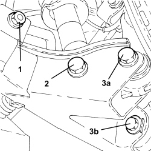
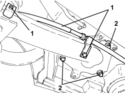
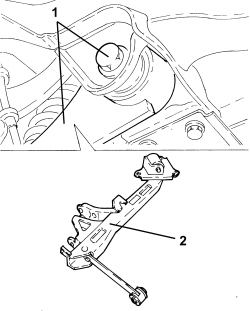

4420B10 L/H OR R/H REAR SUSPENSION WISHBONE (ONE) - R+R
- Path
- Procedures > 44 SUSPENSION AND WHEELS > 4420 REAR SUSPENSION > 4420B REAR SUSPENSION TRACK CONTROL ARMS > 4420B10 L/H OR R/H REAR SUSPENSION WISHBONE (ONE) - R+R
- Kind
- repair procedure (removal / refitting; the operation number is the code)
- Applies to
- all engines; all production periods
- Interactive page
- https://sloeber94.github.io/elrnDB-aBrrSpdr/en/#/946002211
Applies to: all engines; all production periods
 Removing
Removing
 Refitting
RefittingOp. 4450B06 LEFT REAR WHEEL - R.R
1. Undo the nut securing the anti-roll bar joint to the longitudinal track control arm.
2. Undo the bolt fixing the shock absorber to the longitudinal track control arm.
3. Undo the bolt (3a) and the bolt (3b) securing the longitudinal track control arm to the steering knuckle.

Applies to: all engines; all production periods
1. Undo the bolts securing the handbrake cable brackets to the longitudinal track control arm.
2. Undo the bolts fixing the longitudinal track control arm to the bodyshell.

Applies to: all engines; all production periods
1. Undo the bolt fixing the longitudinal track control arm transverse leaf to the rear suspension crossmember.
2. Remove the rear suspension longitudinal track control arm.

Applies to: all engines; all production periods
Refitting
Removing- Place the longitudinal track control arm in position and screw in the bolts securing it to the bodyshell without tightening to torque, the front bolt secured to the steering knuckle, the shock absorber fixing bolt and the bolt secured to the suspension crossmember.
- Position the hydraulic lift complete with tool, complete with the locating dowels, for fitting the longitudinal track control arm correctly in relation to the bodyshell and to the suspension crossmember.
Tool | Description | Function | Validity |
|---|---|---|---|
1870835001 | Hydraulic lift | Rear suspension crossmember support |
Tool | Description | Function | Validity |
|---|---|---|---|
2000002400 | Centring tool | Rear suspension crossmember support |
- Tighten the bolts securing both longitudinal arms to the bodyshell to torque.
Component | Fastening | dia | Value (daNm) | Validity |
|---|---|---|---|---|
Body side longitudinal arm bracket | Bolt (to be replaced) | M14 | 13.5 ÷ 16.5 + 90° |
- Remove the hydraulic lift with locating tool.
- Connect the handbrake cable to the longitudinal track control arm using the brackets.
- Place the anti-roll bar joint in position and secure it to the longitudinal track control arm tightening the nut to the recommended torque.
Component | Fastening | dia | Value (daNm) | Validity |
|---|---|---|---|---|
Longitudinal wishbone side anti-roll bar joint | Nut | M12 | 7.2 ÷ 8.8 |
Op. 4450B06 LEFT REAR WHEEL - R.R
- With the vehicle positioned on a lift and in "standard 0" or "standard A" static load conditions, tighten the following fastenings, previously screwed in, to torque.
Component | Fastening | dia | Value (daNm) | Validity |
|---|---|---|---|---|
Strut side longitudinal arm | Bolt (to be replaced) | M14 | 9.9 ÷ 12.1 + 90° |
Component | Fastening | dia | Value (daNm) | Validity |
|---|---|---|---|---|
Crossmember side longitudinal arm blade | Bolt (to be replaced) | M14 | 9.5 ÷ 11.5 + 90° |
Component | Fastening | dia | Value (daNm) | Validity |
|---|---|---|---|---|
Longitudinal arm side shock absorber | Bolt | M14 | 13.0 ÷ 16.0 |
- Finish fitting the longitudinal track control arm with the respective toe in and camber adjustment bolts as described in the specific "wheel geometry" procedure.
- Refer to
Op. 4450A40 REAR WHEEL GEOMETRY - CHECK USING OPTICAL EQUIPMENT, INCLUDES ADJUSTMENT IF NECESSARY
Topics linked from this page (2)
- 4450A40 REAR WHEEL GEOMETRY - CHECK USING OPTICAL EQUIPMENT, INCLUDES ADJUSTMENT IF NECESSARY
- 4450B06 LEFT REAR WHEEL - R.R